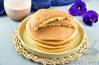

| Название блюда | Оценка блюда от 1 до 10 | Ссылка на рецепт | Фото блюда |
|---|---|---|---|
| Домашние сырные палочки | 8 | Ссылка на рецепт | |
| Запеканка с курицей и макаронами | 10 | Ссылка на рецепт | |
| Джамбалайя | 9 | Ссылка на рецепт | |
| Хоткейки | 10+ | Ссылка на рецепт |  |
| Корн-доги/td> | 8 | Ссылка на рецепт | |